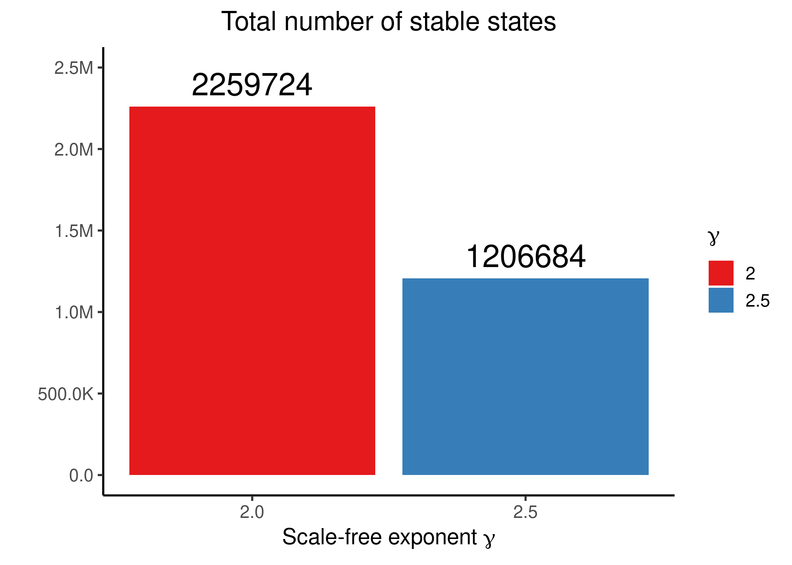
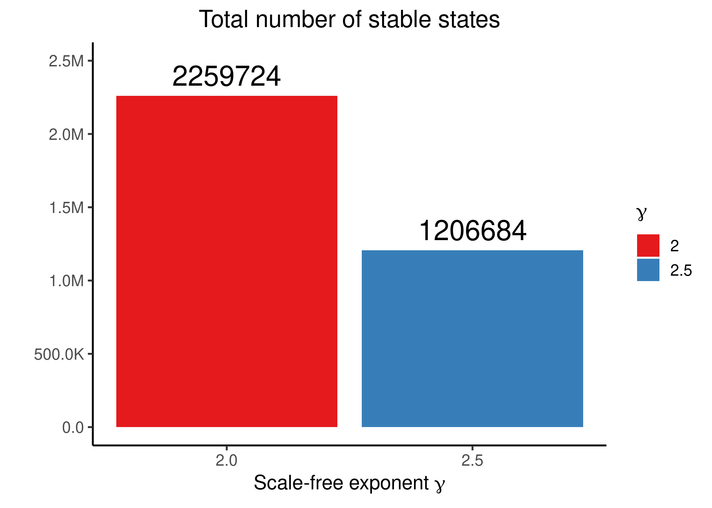

Random scale-free Networks Analysis
Method

- We generate the scale-free topology
.siffiles with the script random_topo_gen.R - implementation was based on the BoolNet R package (Müssel, Hopfensitz, and Kestler 2010). The input degree distribution of the scale-free networks follows Riemann’s Zeta function (Aldana and Goldstein 2003). - We use the abmlog software to produce every possible link operator parameterized boolean model out of every topology file created in the previous step. The more link operator equations the network topology has (target nodes with both activating and inhibiting regulators) the more boolean models are generated (see script run_abmlog_topology_files.sh).
- We analyze the data from all the abmlog-produced models and compare stable state and link operator assignment and produce agreement statistics (see script get_scale_free_model_stats.R)
Most of the scale-free networks studied in literature have \(\gamma\in[2,2.5]\) - see Fig. 5 in (Aldana and Goldstein 2003).
Topology Stats
Some statistics on the scale-free network topologies produced:
knitr::include_graphics(path = "img/lo_eq_density.png")
knitr::include_graphics(path = "img/max_reg_density.png")Figure 17: Scale-free networks Topology statistics
- \(\gamma=2\) provides networks with statistically more link operator nodes (targeted by both positive and negative regulators) and thus these topologies will produce more boolean models via
abmlog, so more stable state data to compare with the respective parameterization. - We also observe for both \(\gamma\)’s the presence of link operator nodes with high numbers of regulators which is exactly what we needed from the dataset to test if the standardized regulatory functions are biased or not.
- \(\gamma=2\) also provides networks with statistically higher in-degree for the largest hub-nodes and thus present better candidates for testing the truth density bias of the standardized boolean regulatory functions, which manifests especially for nodes with high input-degree (e.g. \(\ge 8\))
Boolean Model Stats
Some statistics regarding the abmlog-produced boolean models and their respective stable states:
knitr::include_graphics(path = "img/ss_dist.png")
knitr::include_graphics(path = "img/ss_dist_total_sum.png") 


Figure 18: Stable state statistics
- More stable state data for \(\gamma=2\), even though we had \(\times10\) more scale-free networks produced with \(\gamma=2.5\).
- \(\approx 50\%\) of the scale-free topologies that pass through
abmlogand produce all possible link operator parameterized boolean models, do not have any model with a stable state.
Parameterization vs Activity
sf_stats_g2_5 = readRDS(file = "data/sf_stats_gamma2.5.rds")
sf_stats_g2 = readRDS(file = "data/sf_stats_gamma2.rds")We will organize the link operator nodes on separate groups based on the number of regulators they have and compare nodes coming from different-\(\gamma\) scale-free topologies in separate sections/figures.
For the agreement statistics we will use the percent agreement and Cohen’s \(\kappa\) as before (see note).
Results for networks with \(\gamma = 2\)
sf_stats_g2 =
sf_stats_g2 %>% mutate(reg_group = factor(case_when(
num_reg %in% 2:3 ~ "2-3",
num_reg %in% 4:6 ~ "4-6",
num_reg %in% 7:10 ~ "7-10",
num_reg %in% 11:14 ~ "11-14",
num_reg %in% 15:20 ~ "15-20",
TRUE ~ ">20"), levels = c("2-3", "4-6", "7-10", "11-14", "15-20", ">20")))
sf_stats_g2 %>%
ggplot(aes(x = reg_group, y = percent_agreement, fill = reg_group)) +
geom_boxplot(show.legend = FALSE) +
scale_y_continuous(labels = scales::percent, limits = c(0,1)) +
labs(title = latex2exp::TeX("Agreement (parameterization vs stable state activity) - $\\gamma$ = 2"), x = "Number of Regulators", y = "Percent Agreement") +
geom_hline(yintercept = 0.5, linetype = 'dashed', color = "red") +
theme_classic(base_size = 14) +
theme(axis.text.x = element_text(size = 15))
sf_stats_g2 %>%
ggplot(aes(x = reg_group, y = cohen_k, fill = reg_group)) +
geom_boxplot(show.legend = FALSE) +
scale_y_continuous(limits = c(0,1)) +
labs(title = latex2exp::TeX("Cohen's k (parameterization vs stable state activity) - $\\gamma$ = 2"), x = "Number of Regulators", y = latex2exp::TeX("$\\kappa$")) +
geom_hline(yintercept = 0.6, linetype = 'dashed', color = "red") +
geom_text(aes(x = 6, y = 0.55, label="k = 0.6")) +
theme_classic(base_size = 14) +
theme(axis.text.x = element_text(size = 15))Figure 19: Link operator Parameterization vs Stable State Activity for scale-free topologies with \(\gamma\) = 2
Results for networks with \(\gamma = 2.5\)
sf_stats_g2_5 = sf_stats_g2_5 %>% mutate(reg_group = factor(case_when(
num_reg %in% 2:3 ~ "2-3",
num_reg %in% 4:6 ~ "4-6",
num_reg %in% 7:10 ~ "7-10",
num_reg %in% 11:14 ~ "11-14",
num_reg %in% 15:20 ~ "15-20",
TRUE ~ ">20"), levels = c("2-3", "4-6", "7-10", "11-14", "15-20", ">20")))
sf_stats_g2_5 %>%
ggplot(aes(x = reg_group, y = percent_agreement, fill = reg_group)) +
geom_boxplot(show.legend = FALSE) +
scale_y_continuous(labels = scales::percent, limits = c(0,1)) +
labs(title = latex2exp::TeX("Agreement (parameterization vs stable state activity) - $\\gamma$ = 2.5"), x = "Number of Regulators", y = "Percent Agreement") +
geom_hline(yintercept = 0.5, linetype = 'dashed', color = "red") +
theme_classic(base_size = 14) +
theme(axis.text.x = element_text(size = 15), plot.title = element_text(size = 16))
sf_stats_g2_5 %>%
ggplot(aes(x = reg_group, y = cohen_k, fill = reg_group)) +
geom_boxplot(show.legend = FALSE) +
scale_y_continuous(limits = c(0,1)) +
labs(title = latex2exp::TeX("Cohen's k (parameterization vs stable state activity) - $\\gamma$ = 2.5"), x = "Number of Regulators", y = latex2exp::TeX("$\\kappa$")) +
geom_hline(yintercept = 0.6, linetype = 'dashed', color = "red") +
geom_text(aes(x = 6, y = 0.55, label="k = 0.6")) +
theme_classic(base_size = 14) +
theme(axis.text.x = element_text(size = 15), plot.title = element_text(size = 16))Figure 20: Link operator Parameterization vs Stable State Activity for scale-free topologies with \(\gamma\) = 2.5
Results for both \(\gamma\)’s show the same thing: the higher the number of regulators, the more biased the boolean link operator function result is.
Specifically, for both \(\gamma\)’s, we observe that for \(n>7-10\) regulators, assigning a node the AND-NOT link operator in its corresponding equation, results in it having a stable state equal to \(0\) and vice-versa for the OR-NOT case.